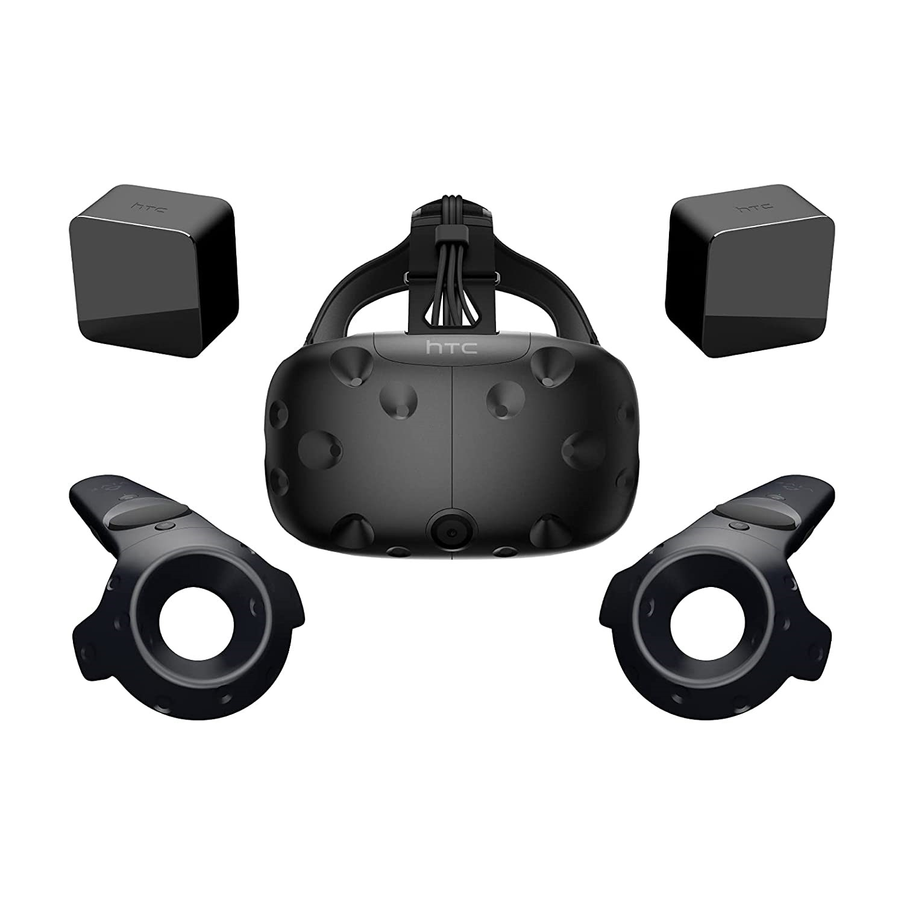
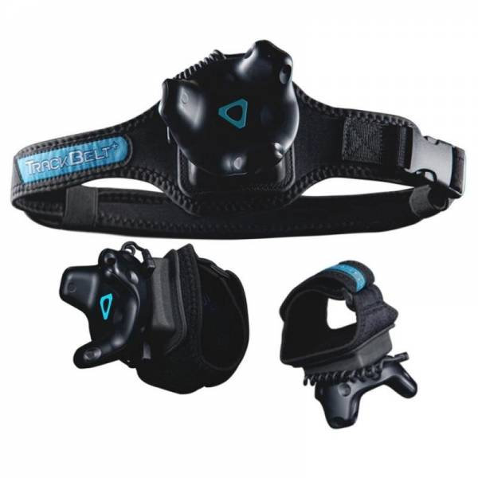
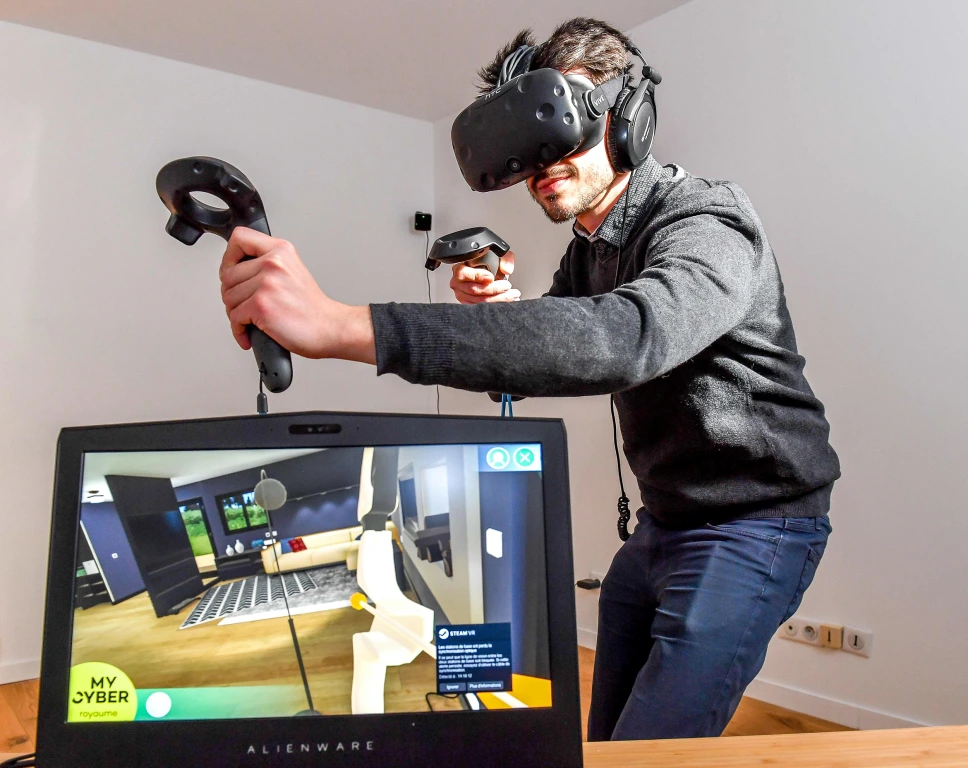

Making of
What was used to create the movie?
>
VR-set
Me and my friend used Virtual Reality equipment to record our movement and control our characters.
My friend used the "Oculus Rift" and I used the HTC-Vive VR-set. The sets are composed of a headset, two controllers
and two infrared tracking sensors to pick up all the motion. The equipment is connected to a pc that's powerfull enough to run VR-Games.
Full Body Trackers
As the main actor I used three extra trackers (one on each foot and one on the waist) to record the full range of my bodys motion, to
make my character appear more lively and realistic.
>
>
"The Studio"
Since the movie is recorded in a Virtual World, no real-life meeting or proper Studio was required to record it, but rather
a casual room at home and a stable internet connection to communicate and see eachother in Virtual Reality. Therefore the clips were also recorded with
a "virtual camera" that sends what it sees to a window on the connected pc, which then gets recorded by the programm OBS, and gets saved on a local folder.